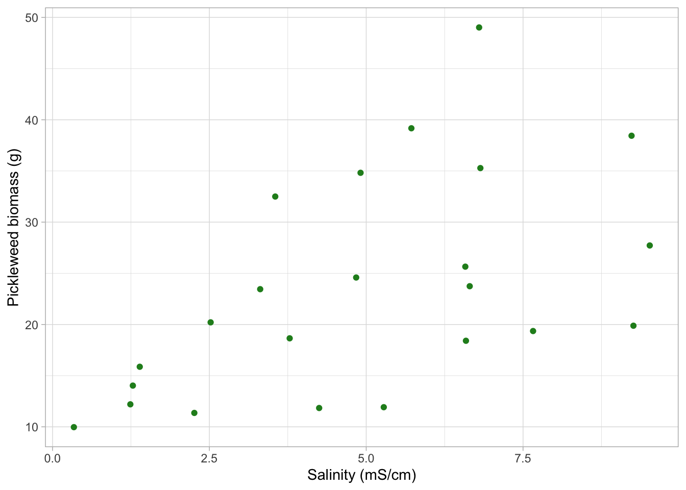

library(tidyverse) #loading in packages
library(janitor) #loading in janitor
library(here) #loading in here
library(readxl) #loading in readxl
salinity <- read_csv("/Users/leahpettway/ENVS-193DS/github/ENVS-193DS_homework-03/HW3_data/salinity-pickleweed (1).csv") #loading in the data
my_data <- read_csv("/Users/leahpettway/ENVS-193DS/github/ENVS-193DS_homework-03/HW3_data/Personal_data.csv") #loading in personal dataHomework-03
Github repository: https://github.com/leahlamarre-ship-it/ENVS-193DS_homework-03
my_data_clean <- my_data |> # Creating the data frame to clean up data
clean_names() #cleaning the whole my_data filePart 2. Problems
Problem 1. Slough soil salinity
a. An appropriate test
b. Create a visualization
salinity_clean <- salinity |> #new object created from salinity data frame
clean_names() |> # cleaning up names so all are lowercase and no spaces
rename("pickleweed_g" = "pickleweed") # including the unit pickle weed is inggplot(data = salinity_clean, #use salinity_clean data frame
aes(x = salinity_m_s_cm, #make the x-axis salinity_m_s_cm
y = pickleweed_g)) + # make the y-axis pickleweed_g
geom_point(color = "forestgreen") + # add point geometry
labs(x = "Salinity (mS/cm)", #relabel the x-axis
y = "Pickleweed biomass (g)") + # relabel the y-axis
theme_light() #change theme from default
C. Checking Assumptions
Assumption of a linear relationship
ggplot(data = salinity_clean, #use salinity_clean data frame
aes(x = salinity_m_s_cm, #make the x-axis the predictor variable
y = pickleweed_g)) + #make the y axis the response variable
geom_point(color = "forestgreen") + #add point geometry to plot colored different from the default
labs(x = "Salinity (mS/cm)", #relabel the x-axis
y = "Pickleweed biomass (g)") + #relabel the y- axis
theme_light() # change theme from default
Assumption of normal distribution
# base layer: ggplot call
ggplot(data = salinity_clean, # starting data frame using salinity_clean
aes(sample = pickleweed_g)) + # y-axis for QQ plot
# first layer QQ reference line
geom_qq_line(color = "red") + # using red so line is easier to see
# second layer: QQ plot
geom_qq()
# base layer: ggplot call
ggplot(data = salinity_clean, # starting data frame using salinity_clean
aes(sample = salinity_m_s_cm)) + # y-axis for QQ plot
# first layer QQ reference line
geom_qq_line(color = "red") + # using red so line is easier to see
# second layer: QQ plot
geom_qq() 
The assumptions I needed to check a few assumptions for a pearson correlation test, which is a linear relationship between the variables and a normal distribution of the variances for each variable. For the linear relationship I visually checked the data once I formatted it into a scatterplot to see the ralitonship between the two variables which appears to be linear due to the general trend of the points. In checking for normal distribution I created two qqplots to see the distribution of the variences and in both plots the points and reference line were quite aligned.
cor.test(salinity_clean$salinity_m_s_cm, salinity_clean$pickleweed_g,
method = "pearson") # using the salinity_clean for a dataframe and then choosing both columns for the pearson's R correlation test
Pearson's product-moment correlation
data: salinity_clean$salinity_m_s_cm and salinity_clean$pickleweed_g
t = 2.8979, df = 21, p-value = 0.008605
alternative hypothesis: true correlation is not equal to 0
95 percent confidence interval:
0.1568265 0.7757682
sample estimates:
cor
0.5344778 d. Results communication
To evaluate the strength of soil salinity and pickle weed biomass I used a Pearson’s correlation test, which I came to the conclusion to use since both variables are continuous and after subsequent checks the data seems to have a linear relationship and normal distribution of variance. The result of the Pearson’s R test is that we found a moderate relationship between soil salinity and pickle weed biomass( Pearson’s r = 0.53, t(21) = 2.9, p = 0.01, ⍺ = 0.05 )
e. Test implications
In the results of the correlation test, a moderate relationship was found between the variables soil salinity and pickle weed biomass. These results suggest that while soil salinity may have some affect on the pickle weed biomass it may not be the ultimate determinant of the biomass. That means for the best success in pickle weed some soil salinity is good but making sure no extremes in soil salinity are emphasized in planting pickle weed.
f. Double check your own work
cor.test(salinity_clean$salinity_m_s_cm, salinity_clean$pickleweed_g,
method = "spearman") # using the salinity_clean for a dataframe and then choosing both columns for the Spearmancorrelation test
Spearman's rank correlation rho
data: salinity_clean$salinity_m_s_cm and salinity_clean$pickleweed_g
S = 824, p-value = 0.003426
alternative hypothesis: true rho is not equal to 0
sample estimates:
rho
0.5928854 The two tests would’ve led me to the same decision that we would fail to reject the null hypothesis as well as finding a moderate relationship between the variables soil salinity and pickle weed biomass We did ultimately find a moderate relationship between soil salinity and pickle weed biomass (Spearman ⍴ = 0.59, S = 824, p = 0.003, ⍺ = 0.05).
Problem 2. Personal data
a. Updating your visualizations
ggplot(data = my_data_clean, # using my data as the data frame
aes(x = rugby_practice_day_yes_or_no, # setting the x axis as the type of day
y = amount_of_protein_grams, # setting the y axis as the amount of protein
fill = rugby_practice_day_yes_or_no)) + # adding color to the boxplot
geom_boxplot(alpha = 0.7) + # boxplot a little transparent to still see the observations
geom_jitter(width = 0.1, alpha = 0.6) + # jittering the points to stay closer together
labs(x = "Rugby or Non-Rugby Day", # relabeling the axis to be more clear
y = "Amount of Protein (g)",
title = "Do I Eat More Protein on Rugby or Non-Rugby Practice Days?") + # adding a title to the graph
scale_fill_manual(values = c("yes" = "maroon",
"no" = "lightblue")) +
theme_classic() +
theme(legend.position = "none")
ggplot(data = my_data_clean, # using the cleaned my data for data frame
aes(x = caffeine_intake_milligrams, # x-axis
y = amount_of_protein_grams)) + # y-axis
# first layer: showing the underlying data
geom_jitter(height = 0, # no jitter in the vertical direction
width = 0.1,
color = "orange") +
labs(x = "Caffeine intake (mg)", # labeling the axes for caffeine intake and amount of protein
y = "Amount of protein (g)",
title = "Protein intake on days with Caffeine intake") +
theme_classic() + # using a theme
theme(legend.position = "none") # getting rid of the legend
b. Captions
Figure 2. Protein intake tends to increase on days with higher caffeine consumption. Points represent observations of daily caffeine intake (mg) and daily protein intake (g) recorded by me (n = 39). Each point represents one day of personal dietary intake.
Problem 3.
a. Describing what an affective visualization would look
An affective visualization for my personal data could potentially look like data formatted like a rugby pitch or creatively showcasing rugby and the protein intake intermixed. The usage of heatmaps is used in rugby strategy so potentially something similiar with my data formatted to resemble rugby in a way can hook a reader and pull them into my visualization. Further incorporating visuals of food since my data relates to protein and food often can catch a readers eyes if presented well.
b. Create a sketch of idea

c. Make a draft of your visualization
 #### d. Write an artist’s statement
#### d. Write an artist’s statement
The content of my piece is showing a rugby pitch but seperated ot represent the days rugby and non-rugby as two different teams as well as the points in defense and attacking shapes. I included tryzones which are the score areas as a type of protein from my data and I tried to make the stands my caffeine intake as the fans above the pitch(field). I found rugby the sport itself influential and took the look of the field as inspiration. The form of my work wsa a digital piece created on my ipad with a stylus.
e. Prep materials
https://docs.google.com/presentation/d/1bT6IQwot0-sYsC-0H2kMh1y3w-CA-Mhz9qoSS9oiYV4/edit?usp=sharing
Problem 4. Statistical critique
a. Revisit and summarize
The statistical test included is a linear-mixed model effects. The occurrence and abundance are the response variables, while year of sampling or year of construction was the predictor variable along with types of substrates, site, soil squares, and texture of soil.
 #### b.
#### b.